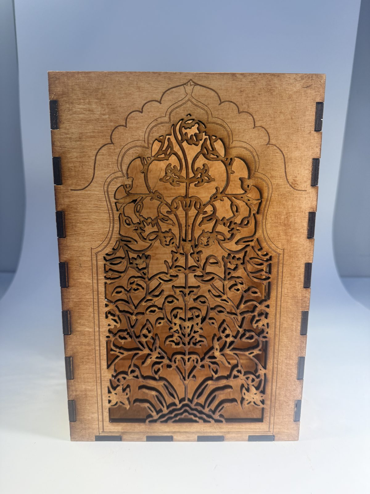
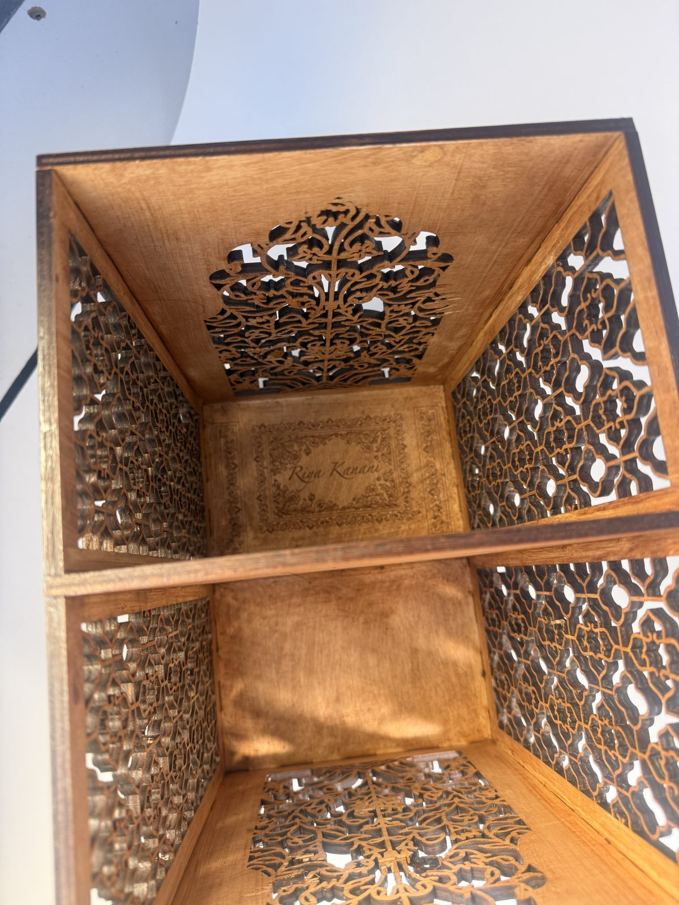
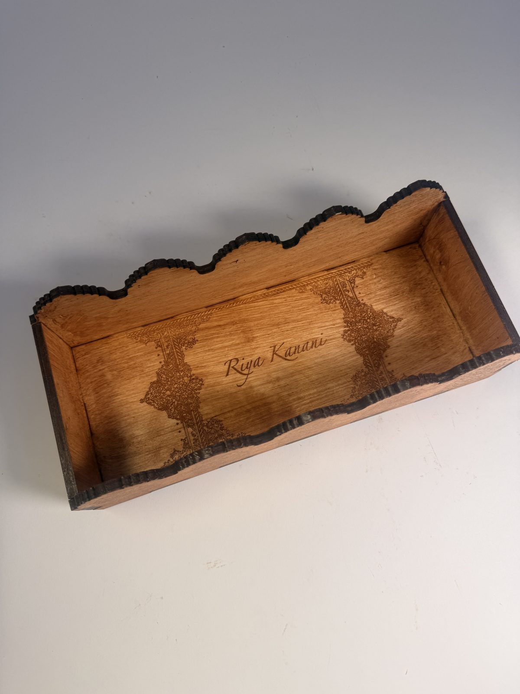
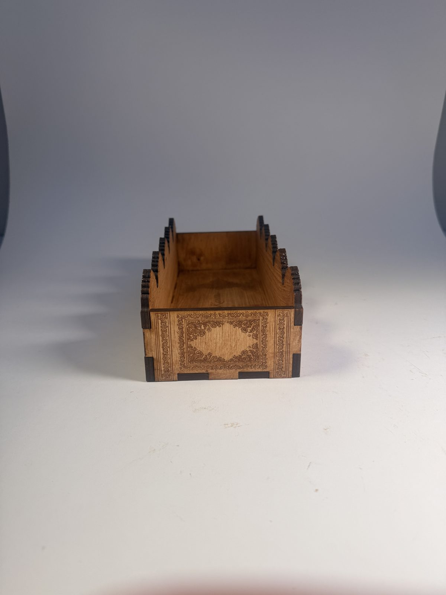
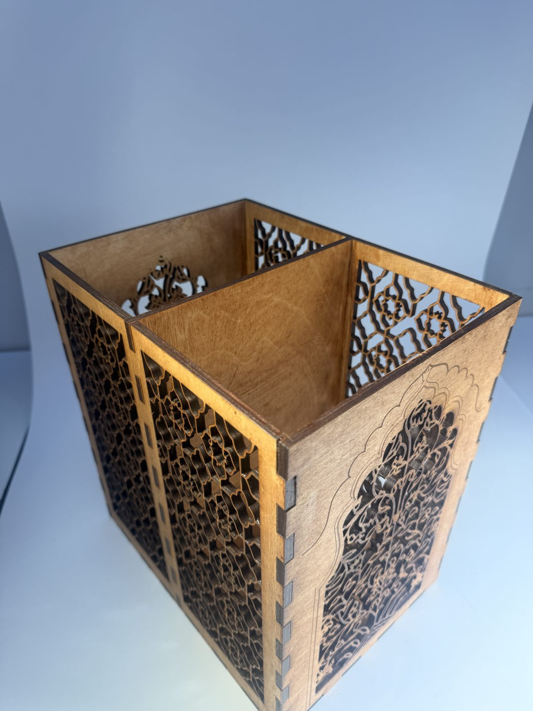
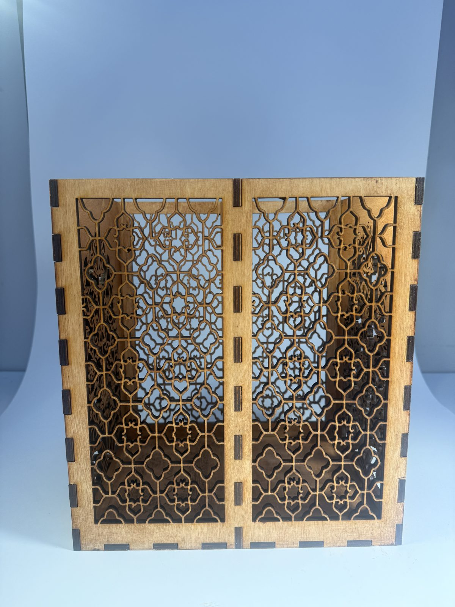
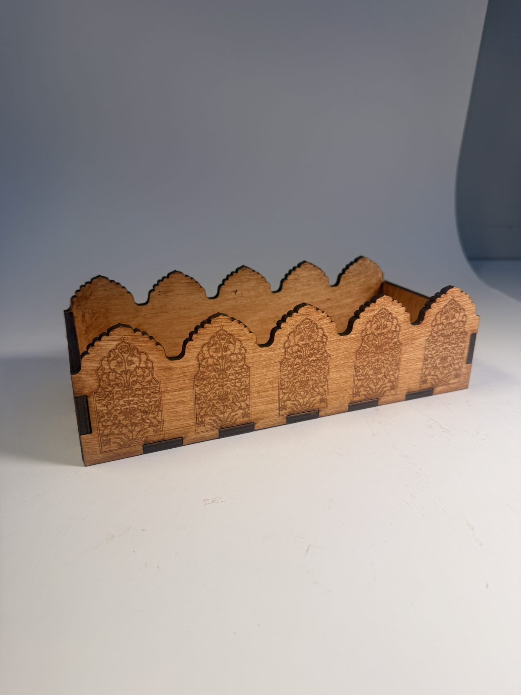

Created for my laser cutting and 3D printing class at Carnegie Mellon University, Fall 2026.
Explore the 3D model: Fusion 360 Model
Key Words: Laser cutting · Fusion 360 · Parametric box design · Finger joints · MarkerCase · Jali patterns · Raster engraving · Functional design







For our "Box vs Box" midterm, I designed and laser cut a jali-patterned utensil holder and a matching tray. It is a functional piece: a holder for ladles and large cooking spoons for my sister.
I modeled the holder in Fusion 360. I was skeptical at first, since it leaves more room for user error than a box generator, but I ended up really liking the flexibility it gave me over every panel.
I wanted a jali design, the carved lattice screens of South Asian architecture, because I come from a South Asian family. The side panels are cut all the way through, and the front has an arched, engraved floral panel.
I was also unsure about finger joints, but I really like them now. They make the box look handmade and intricate rather than store bought.
I made the tray with the MarkerCase box generator, gave it scalloped, arch-shaped sides to echo the jali, and engraved my name on its floor.
All cuts used 9 speed, 100 power and 10 frequency; all engravings used the wood 300 dpi setting.
• Laser cutter
• Fusion 360
• MarkerCase box generator
• Adobe Illustrator
I'm against clutter, so I only want to make things I put my whole self into: pieces that are functional, ergonomic and useful for a long time, not things that end up in the trash. The rubric gave me structure and room to try again, and the result is an art piece I am proud of.